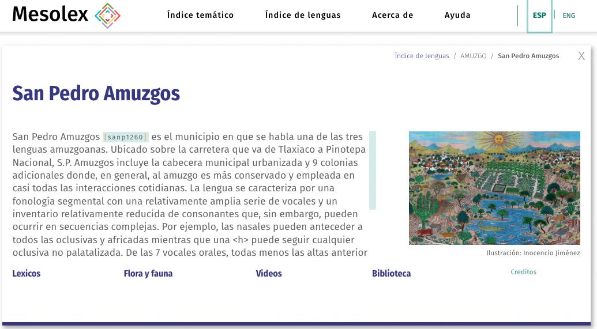

Acerca de Mesolex
Historia
Mesolex: Lexicosemantic Resources for Mesoamerican Languages mesoamericanas es un portal que ofrece a todos los usuarios acceso directo y abierto a una amplia colección de recursos sobre lenguas mesoamericanas. Este portal fue creado y diseñado para facilitar el acceso a estos recursos a hablantes nativos, al público en general y a la comunidad académica. De esta manera estos grupos podrán estudiar las lenguas representadas en Mesolex y en muchos casos escuchar grabaciones en audio (con transcripciones y traducciones), consultar diccionarios y leer artículos sobre las mismas lenguas. Los usuarios pueden llegar a consultar los recursos de Mesolex por una de dos vías desde la página principal: (1) Por lengua (haciendo clic en Índice de lenguas); y (2) por tema (haciendo clic en el Índice temático).Pero Mesolex no es solamente un sitio para consultar recursos lexicosemánticos sino que ofrece a los usuarios métodos innovadores de consulta a dichos recursos. De gran importancia son las herramientas “back-end” (esto es, almacenadas en el servidor) creadas para las búsquedas en los diccionarios de cada lengua: (a) un transductor de estado finito (“finite state transducer”), (b) un tesauro, y (c) un buscador bilingüe (español e inglés). Mesolex también incluye un programa recientemente desarrollado, SYLARD (de código abierto), que convierte anotaciones en ELAN a HTML para que con cualquier navegador de web un usuario pueda escuchar los audios, acompañados por las transcripciones y/o traducciones presentadas línea por línea.
Mesolex ha sido diseñado con el apoyo de una beca del National Endowment for the Humanities, Office of Digital Humanities (HAA‑266482‑19). El contenido ha sido proporcionado por varios individuos y fuentes. De hecho, una meta principal de Mesolex es la de ofrecer a cualquier contribuyente potencial, particularmente hablantes nativos y comunidades indígenas, un mecanismo para divulgar material acerca de sus propias lenguas y culturas (p. ej., artículos, tesis, léxicos y multimedia) mediante sub‑portales dedicados a una lengua o tema en particular. Mesolex no intenta ser un archivo permanente sino un portal para (1) facilitar el descubrimiento y acceso a materiales archivados en cualquier servidor y (2) desarrollar estructuras y contenido de metadatos que se puedan exportar a archivos permanentes, que pueden aceptar y preservar segura y permanentemente los materiales divulgados vía Mesolex (p. ej., diccionarios, audios transcritos y traducidos). En resumen, la meta de Mesolex es ser tanto un centro de divulgación de recursos lexicosemánticos, como al mismo tiempo crear un mecanismo para facilitar el almacenamiento permanentemente de estos mismos recursos en archivos seguros.
Las dos secciones que siguen presentan las dos vías principales para accesar a los recursos ofrecidos vía Mesolex: Índice temático e Índice de lenguas.
Índice temático y sus módulos
Biblioteca
El módulo de biblioteca proporciona vínculos a archivos (generalmente en pdf) relevante a las lenguas terminales que tienen representación vía Mesolex. Así el sub-portal del mixteco de Yoloxóchitl incluye materiales relevantes a esta lengua, tanto publicados como no publicados (p. ej., presentaciones en congresos, una guía ilustrada etnobotánica). Todos estos recursos son de libre acceso.
Videos
El módulo de videos es simplemente un catálogo con vínculos a videos en línea (la mayoría en YouTube) relevantes a cualquier lengua terminal representada en Mesolex. El administrador de cada lengua terminal tiene la libertad de seleccionar y crear los vínculos que desee. El módulo de videos en Mesolex incluye y presenta, mediante un catálogo en línea, los metadatos de los videos en la misma estructura que se utiliza en el módulo de Biblioteca.
Audio: SYLARD
SYLARD (Synchronized Language Annotation Result Display) es un programa de código abierto que convierte archivos en ELAN (.eaf extensión) a HTML para su reproducción línea por línea mediante un navegador de web. Usuarios tendrán la posibilidad de configurar la presentación en su pantalla en varios formatos, como se explica en el Manual de usuario de SYLARD. Por ejemplo, podrían cambiar la lengua de las traducciones (p. ej., de español a inglés, si el archivo original de ELAN tiene traducciones en las dos lenguas), o bien pueden cambiar la presentación en línea (color de la fuente, organización de los textos, etc.) a una que el usuario prefiera.
SYLARD se encuentra mediante el módulo de audios en Mesolex y ofrece un catálogo de los audios con un buscador y filtros (p. ej., por lengua, tema, autor). Ha sido creado para que con cualquier navegador los hablantes nativos, los académicos y el público en general pueda tener acceso en línea a grabaciones en audio de lenguas mesoamericanas, acompañadas por sus transcripciones y traducciones. Actualmente, para disfrutar este tipo de presentación usuarios tendrían que bajar un archivo de ELAN (extensión .eaf) y el audio correspondiente (.mp3 o .wav) de donde están archivados, luego bajar e instalar ELAN en su computadora personal y, finalmente, vincular el audio y el archivo .eaf en su computadora mediante el programa ELAN. Además, cada usuario tendría que repetir este proceso en su propia computadora. Mediante SYLARD, un módulo de Mesolex, no habrá necesidad de cualquier acción por parte de los usuarios salvo la de encontrar un audio en el catálogo de SYLARD y hacer clic en para activar la reproducción del audio y presentación de los textos línea por línea.
Léxicos
Los léxicos en Mesolex incluyen herramientas innovadoras que solucionan tres dificultades comunes en cuanto a las búsquedas:
- Variación lingüística y ortográfica entre lenguas cercanas;
- Arbitrariedad de las glosas en una lengua occidental, generalmente español o inglés;
- Glosas multilingües que presentan dificultades cuando simultáneamente se quiere utilizar más de un diccionario con glosas en distintas lenguas L2
1. Variación lingüística y ortográfica
Variaciones lingüísticas y ortográficas entre lenguas relacionadas generalmente complican el descubrimiento de lemas. Por ejemplo, un hablante nativo del náhuatl puede buscar la entrada para tlacatl (‘hombre’) y sentirse frustrado cuando no encuentre esta palabra tan común. Bien podría ser porque el diccionario en línea deletrea esta palabra como tla:katl (con la primera vocal, <a>, marcada como larga con dos puntos y la oclusiva velar [k] escrita con <k> y no con <c> como puso el usuario. Estas variaciones ortográficas obstaculizan las búsquedas. O, si el diccionario es del náhuatl de los Altos de Puebla, una búsqueda para <tlacatl> no encontrará la entrada <ta:kat>, la forma cognada en el náhuat de esta región donde el fonema <tl> no existe. Estas variaciones lingüísticas obstaculizan las búsquedas.
En general, son los usuarios que tienen que superar estos dos obstáculos (ortográfico y lingüístico) a las búsquedas, cambiando y ajustando sus búsquedas, a menudo sin éxito o con muchas dificultades. Mesolex integra mecanismos computacionales en el servidor para automatizar, o parcialmente automatizar, el apoyo a las búsquedas, amortiguando así el esfuerzo de los usuarios. La primera herramienta son transductores de estados finitos (FSTs, ‘finite state transducers’) específicos a cada lengua. Búsquedas iniciadas por los usuarios (p. ej., <tlacatl>) se canalizan automáticamente por un FST que convierte la secuencia escrita por el usuario a otras secuencias equivalentes (así <tlacatl> se convierte en <tla:catl, tla:ca:tl, tlaca:tl, tlakatl, tla:katl …, tacat>, etc.) para poder encontrar automáticamente cualquier variación ortográfica (p. ej., <tlakatl>) o lingüística (p. ej., <ta:kat>) utilizada en el diccionario que es diferente a la forma que busca el usuario. Los FSTs son poderosos y pueden neutralizar distinciones ortográficas y lingüísticas que los usuarios no manejan: cantidad vocálica en el náhuatl, tonos en mixteco, diferencias en fonación en mazateco y totonaco y el contraste entre consonantes fortis y lenis en el triqui. Toda esta flexibilidad es automática, un producto de tener en el servidor FSTs específicos a cada lengua.
2. Glosas arbitrarias
Los usuarios también podrían quedar frustrados cuando sus búsquedas en lenguas occidentales, aún para los términos más básicos, no encuentran la palabra deseada. A menudo esto se debe a las decisiones tomadas por el lexicógrafo al crear la entrada. Por ejemplo, una búsqueda para <culebra> podría no encontrar ko¹o⁴ en mixteco, kowa:t en náhuatl o lu:wa' en totonaco porque los lexicógrafos utilizaron la glosa <víbora> o <serpiente> y no <culebra>. Para solucionar este problema Mesolex tiene instalado un tesauro en el servidor que descubre sinónimos y los integra en una búsqueda. Así, por ejemplo, cuando el usuario busca la glosa <culebra>, primero se envía esta palabra al tesauro que convierte la búsqueda a una serie de sinónimos: <culebra | serpiente | víbora>. O, por ejemplo, una búsqueda para <contemplar> podría fracasar en encontrar la entrada indicada pero si este termino pasa por un tesauro encontrará las entradas relevantes para <pensar>, <ponderar> y otras semánticamente relacionadas.
3. Búsquedas bilingües
Finalmente, a veces los usuarios van a querer buscar simultáneamente en varios diccionarios, algunos de los cuales podrían estar en lenguas L2 distintas (principalmente español e inglés). Para facilitar este proceso en el futuro Mesolex tendrá incorporado al servidor una sencilla lista bilingüe que extenderá una búsqueda a los equivalentes en distintas lenguas L2. Así, por ejemplo, una búsqueda para <cat> en un diccionario encontrará <gato> (y <gata>) y una búsqueda para <perro> encontrará <dog>
Las tres susodichas herramientas (transductores de estados finitos, tesauro, diccionario bilingüe) facilitan el descubrimiento de lo buscado a pesar de los desafíos que se mencionan en los párrafos anteriores.
Flora y Fauna
El módulo de Flora y Fauna es un libro electrónico en desarrollo acerca del conocimiento etnobiológico de comunidades indígenas en México. Por el momento se presenta solamente el prototipo, con un contenido limitado.
NNótese que varias guías ilustradas de etnobotánica están en Mesolex y se pueden accesar mediante el módulo Biblioteca. Este material entre otros textos se puede encontrar o pasando por el subportal de una lengua terminal y después a Biblioteca o bien directamente por el módulo Biblioteca del Índice temático buscando, en este caso, todo texto que menciona ‘etnobo…’).
Índice de lenguas
Resumen
El Índice de lenguas es una manera fácil de encontrar recursos en Mesolex vía la lengua relevante. Mediante esta vía un usuario primero pasa por el Grupo de lenguas (p. ej., Amuzgo, Maya, Mazateco, Mixe, etc.) que representa un nodo taxonómico superior en un árbol filogenético de lenguas. El nivel del nodo es, de una manera, arbitrario. Así Mesolex no tiene un grupo de lenguas designado como amuzgo-mixteco sino grupos menores: Amuzgo, Mixteco y Triqui (en el futuro quizá se agregará Cuicateco o bien se cambiará Mixteco a Mixteco-Cuicateco). Una vez que un usuario haga clic en un grupo de lenguas, aparece una lista de lo que se ha designado “lenguas terminales”, que son las lenguas con recursos en Mesolex. Por ejemplo, el grupo de lenguas Mixteco incluye 4 lenguas terminales más “Mixteco histórico (proto-Mixteco)” que ofrece una discusión y un léxico de formas del proto-mixteco. Finalmente, al hacer clic en cualquiera de las lenguas terminales el usuario es remitido a la página principal de una lengua terminal como la de San Pedro Amuzgos, Amuzgo, aquí ilustrada.
Ejemplo de la página de una lengua terminal
Como se ve en la captura de pantalla de San Pedro Amuzgos, al pie aparecen los tópicos tal como aparecen en la página principal del Índice temático. Al accesar a los recursos mediante la página de una lengua terminal se aplica automáticamente un filtro para que se muestren solamente lo que es pertinente a la lengua terminal activa.
En cuanto a créditos, para todos los subportales de lenguas terminales hay un administrador o grupo de administradores, generalmente investigadores de la lengua, quienes seleccionan el contenido de subportal y lo suben al servidor. El administrador (o administradores) y las instituciones que han apoyado la investigación de cada lengua terminal reciben los créditos pertinentes. Cada lengua terminal, entonces, tienen créditos distintos, visibles al hacer clic en el link Créditos, que está en rojo.